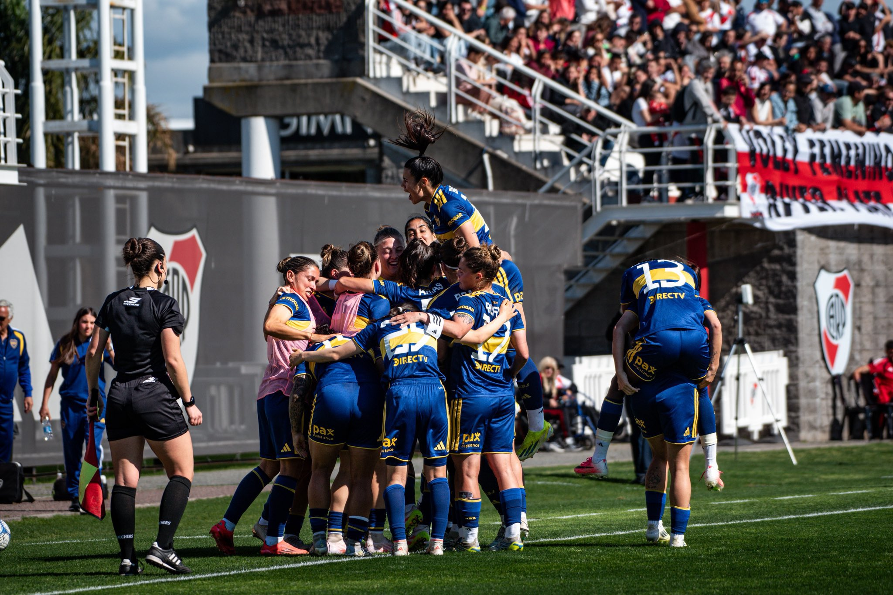
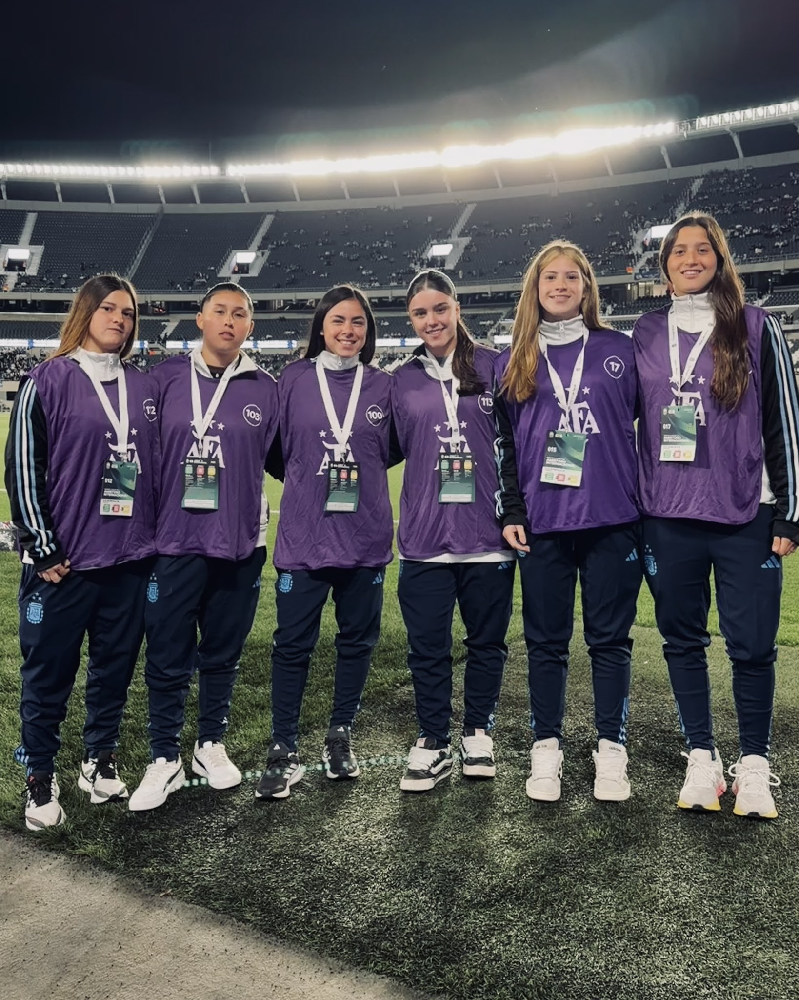
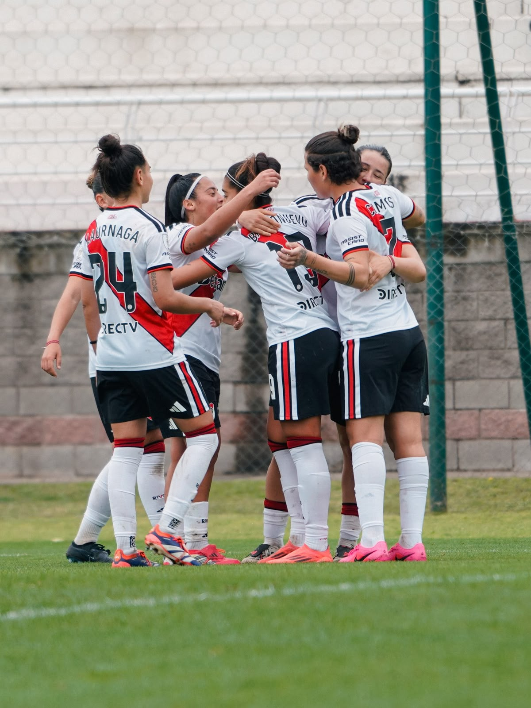

Seguinos en redes
Las Millonarias vencieron 2-1 en el River Camp, sumaron su segunda victoria al hilo y llegaron a 17 puntos: están a nueve de Boca y con tres partidos menos.

River llega con partidos pendientes. Imagen: archivo femeninoinfoRiver ganó 2-1 a Gimnasia en el River Camp, por la Fecha 12 del Clausura. Nikol Laurnaga y Mercedes Diz marcaron para las Millonarias; Micaela Adorno descontó para las platenses. El resultado deja a River con 17 puntos en nueve partidos y una diferencia de gol de +7, y lo ubica séptimo en una tabla en la que todavía le quedan fechas por recuperar.
La cuenta es simple: Boca lidera con 26 puntos, pero jugó 12 partidos y le quedan tres. River jugó nueve y le quedan seis. Si ganara los tres partidos que tiene de ventaja en el calendario, llegaría a 26 y quedaría igualado con el líder, y todavía le restarían otros tres por jugar. Detrás de Boca, la pelea está muy apretada: Talleres, Banfield y San Luis FC suman 24, y San Lorenzo, 22.

Jugadoras de River. Imagen: archivo femeninoinfoLa victoria sobre Gimnasia llegó después del 1-0 sobre Newell's en Rosario por la Fecha 11, con gol de Magalí Natta. Antes, River había caído 2-1 en el Superclásico reprogramado, frente a Boca. Con las dos victorias, el equipo de Núñez volvió a meterse en la parte alta de la tabla.
Goles y resumen de River 2-1 Gimnasia. Video: El Femenino / LPF PlayRiver juega el jueves 12 de noviembre a las 15 ante Banfield, en el Estadio Florencio Solá, por la Fecha 13. El Taladro llega con 24 puntos y viene de ganarle 1-0 a SAT, por lo que es un partido directo entre equipos que pelean arriba. Será un buen examen para saber si River puede convertir sus partidos pendientes en puntos reales.

River, Banfield y Boca ya habían compartido la cima en la Fecha 4. Imagen: archivo femeninoinfo River 1-0 en Rosario, la Fecha 11. Video: El Femenino / LPF PlaySeguir leyendo
Seguinos en redes